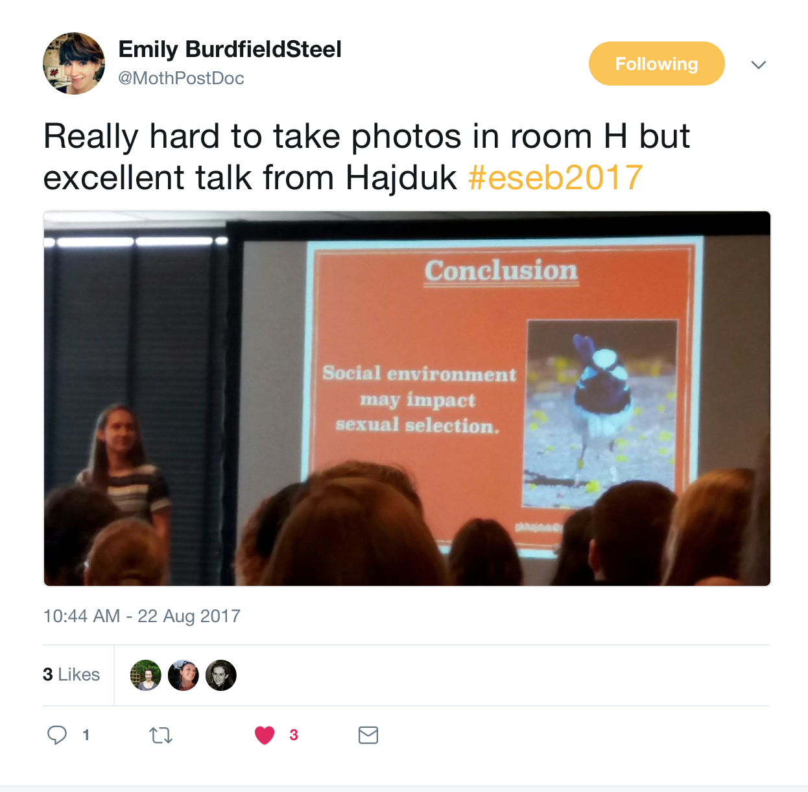

What a week!
I’m exhausted - conferences can be so draining! It’s an incredibly intense experience when you try to make the most of it and I tried my best: I prepped for my talk, I then attended back-to-back talks in nearly all slots, and during each break and meals I was either catching up with people or networking. All in all, I needed to be focused and on top of my game 100% of the time - but it went well and was well worth it!
My fairy-wren talk
My talk had a full audience who had quite a few great comments/questions too - a couple of kind souls even took and tweeted photos - see below. Plenty of people chased me down during the day and the poster session that evening, and a few more came for a chat in the following days too, which is absolutely fantastic.
Thank you to everyone who reached out!

Community
It’s always an amazing experience to be able to submerge oneself in research and catch up on what others in the field have been doing, to see the diversity of topics being explored and the progress made.
It was also an opportunity to catch up with some friends - plenty of ex-Edinburgh, Sheffield and ANU folk whom I was very pleased to see. I’m finally at that stage where I know quite a few people at conferences, so there is an extra layer to it, a bit more of a sense of community, which I really like.
Other highlights of the week? Too many to list! But I will give you a taste of the research presented.
Talks
Here are a few talks I went to and enjoyed, just to give you an idea of the diversity of topics covered.
-
My favourite keynote lecture was that given by Renee Duckworth, Associate Professor at the University of Arizona, who talked about “Individual variation, ecological dynamics and evolutionary feedbacks”. Some really really great work using large-scale field experiments, if you are not familiar with her research I recommend you have a look.
-
Other talks… I can’t really pick just one talk, there were many great ones, including a talk by my supervisor, Loeske Kruuk (talking about rapid evolution in wild populations) on Monday morning. I’ll instead list a few of the great ones I had the pleasure of listening to below.
-
On Tuesday, I have spent majority of my time in the Symposium on environmental effects on sexual selection (where my talk was too) and particularly enjoyed talks by Svensson (on importance of integrating sexual selection with other fields), Godwin (sexual selection and population fitness vs. environmental change), Stapley (reproductive isolation & colour polymorphism in Anolis lizards) and Bichet (effects of climate on infidelity in Alpine marmots!).
-
Wednesday - we did a half-day of talks, with the open symposium providing some interesting choices, including Lehtonen (multilevel selection and kin selection), Corral-Lopez (brain size and mate attractiveness assessment) and Holen (brood parasitism defences). Then we did excursions in the afternoon - I went to the wetlands and learnt quite a bit about the way these are managed (but also heard some rather unpleasant and untrue comments about Polish people from our guide).
-
On Thursday we had a great talk by Kokko (a sex-specific guide to using spatially varying resources), Busana (multi-level determinants of fitness), Peters (links between rainfall and breeding in purple-crowned fairy-wrens) and Vitikainen (life-history variation in mongooses) to name a few. I was particularly glad to see Vitikainen’s talk - I’m not the only one with a weird study system!
-
We started Friday off with Jiggins’ plenary on speciation in Heliconius butterflies. Other speakers included Kolm (brain anatomy and schooling behaviour - some cool technology used), Slate (supergene controlling sperm morphology - some work linked to my previous lab) and Kuepper (genetics of reproductive tactics in ruffs).
There were many more good talks - apologies I can’t mention them all here!
Posters
We had three poster sessions and with ~800 posters it’d be incredibly hard to list a reasonable sample - unlike during talks I also haven’t taken any notes, so it’s hard to remember details and names (I’m so very bad with names).
I was pleased to see that the vast majority of the posters were of high quality and the presenters knew their stuff, so it was a pleasure to chat to them. The wine system was implemented too - each presenter had a bottle of wine and members of the audience would go over, get a glass poured and talk about the poster. It worked very nicely. One person even tried to bride us with extra booze - sneaky!
Conclusion
All in all, an incredibly packed week, full of amazing research and great people. There were small issues, as there are bound to be with a conference this size (over 1400 people). Some of these (e.g. problems with rooms, not enough food at lunches) shouldn’t have really been an issue, particularly given that the conference was held at a dedicated venue that really should know better.
Of course, at the end the great benefits of attending outweigh the small bumps, hunger and tiredness. But I wouldn’t say no to extra cake in the future! One needs to feed the brain to stay focused and be able to take in all the information.